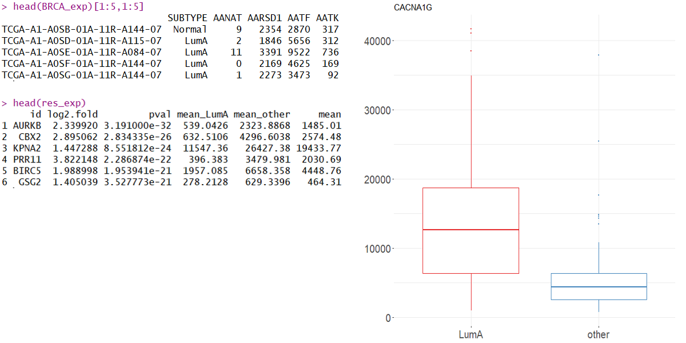

MLExpResso – NGS, Metylacja, Expresja, R i sporo kawy
Aleksandra Dąbrowska
Alicja Gosiewska
29.09.2017
Grupa MI2 i MI2 DataLab
NCN Opus grant 2016/21/B/ST6/02176
Nazwa
Terminologia biologiczna
Podstawowe pojęcia
- Gen
- Sonda CpG
- Ekspresja genu
- Metylacja DNA
Wywołania funkcji
Ekspresja

Metylacja

Integracja ekspresji i metylacji

Co dalej?
GitHub
kody - czy dodawać zamiast obrazków?
duzy
summary(iris)## Sepal.Length Sepal.Width Petal.Length Petal.Width
## Min. :4.300 Min. :2.000 Min. :1.000 Min. :0.100
## 1st Qu.:5.100 1st Qu.:2.800 1st Qu.:1.600 1st Qu.:0.300
## Median :5.800 Median :3.000 Median :4.350 Median :1.300
## Mean :5.843 Mean :3.057 Mean :3.758 Mean :1.199
## 3rd Qu.:6.400 3rd Qu.:3.300 3rd Qu.:5.100 3rd Qu.:1.800
## Max. :7.900 Max. :4.400 Max. :6.900 Max. :2.500
## Species
## setosa :50
## versicolor:50
## virginica :50
##
##
## maly
summary(mtcars)## mpg cyl disp hp
## Min. :10.40 Min. :4.000 Min. : 71.1 Min. : 52.0
## 1st Qu.:15.43 1st Qu.:4.000 1st Qu.:120.8 1st Qu.: 96.5
## Median :19.20 Median :6.000 Median :196.3 Median :123.0
## Mean :20.09 Mean :6.188 Mean :230.7 Mean :146.7
## 3rd Qu.:22.80 3rd Qu.:8.000 3rd Qu.:326.0 3rd Qu.:180.0
## Max. :33.90 Max. :8.000 Max. :472.0 Max. :335.0
## drat wt qsec vs
## Min. :2.760 Min. :1.513 Min. :14.50 Min. :0.0000
## 1st Qu.:3.080 1st Qu.:2.581 1st Qu.:16.89 1st Qu.:0.0000
## Median :3.695 Median :3.325 Median :17.71 Median :0.0000
## Mean :3.597 Mean :3.217 Mean :17.85 Mean :0.4375
## 3rd Qu.:3.920 3rd Qu.:3.610 3rd Qu.:18.90 3rd Qu.:1.0000
## Max. :4.930 Max. :5.424 Max. :22.90 Max. :1.0000
## am gear carb
## Min. :0.0000 Min. :3.000 Min. :1.000
## 1st Qu.:0.0000 1st Qu.:3.000 1st Qu.:2.000
## Median :0.0000 Median :4.000 Median :2.000
## Mean :0.4062 Mean :3.688 Mean :2.812
## 3rd Qu.:1.0000 3rd Qu.:4.000 3rd Qu.:4.000
## Max. :1.0000 Max. :5.000 Max. :8.000